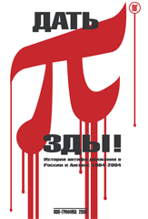

"ДАТЬ П"
История антифа движения в России и Англии:1984-2003
Предисловие 1
Герои уличных невидимых фронтов

«Дать пизды» - это, безусловно, лучшая русскоязычная книга десятилетия. Её название так же многогранно, как хороший удар кулаком в табло: тут и хруст челюсти, и зуд разбиваемого кулака, и красные брызги, и падающий с неба белый снег. Кровь с молоком. Тут и боль потерпевшего, и радость победителя, чем-то похожая на высшую точку оргазма или, например, радость геймера, который прошел суперсложный уровень в «Quake». Только в «Дать пизды» никаких игрушек нету: всё по-настоящему. Роль монстров здесь отведена наци-скинам. При поддержке ментов и других органов власти эта новая форма патриотичных гопников терроризирует неславян и всевозможных неформалов: от рэпперов до любителей реггей, от толкиенистов до скейтеров. Противостоять фашикам с разной степенью успешности пытаются разные люди и группы. Одна из таковых - скинхеды-антифашисты - Red&Anarchist Skinheads (RASH) и Skinheads Against Racial Prejudices (SHARP). Такие словосочетания, к сожалению, пока не достаточно привычны русскому уху. Но обратимся к Англии конца 60-х годов – родине субкультуры скинхедов. В ту эпоху среди скинов, например, было много чернокожих… Если вы хотите более подробно узнать историю скинхедов, посетите сайты www.oioioi.ru и www.redskin.newmail.ru. Так вот, именно представители SHARP и RASH участвовали в большей части историй из «Дать пизды». В реальности акций было проведено гораздо больше, просто небольшой объем книги и/или высокая степень радикальности не сделали возможным их упоминание. В «Дать пизды» описаны наиболее типовые случаи. Конечно, было и немало неудач, но об успехах писать куда приятнее. Основные сферы, где антифа сегодня пытаются нейтрализовать наци, это ска-концерты, группировки футбольных хулиганов, а также улицы и метрополитен. В этих столкновениях основная установка SHARP и RASH - дать понять наци, что теперь появилась сила, которая может хорошенько начистить им морды, поставить их на место, каковое есть у параши. При всей жесткости отпора мы максимально стараемся не допускать летальных исходов и калечения противника. Это мотивируется не только боязнью серьезных неприятностей по линии Уголовного Кодекса, но и просто здравым смыслом: каким бы ярым фашистом человек ни был сегодня, у него нельзя отбирать право поумнеть. Кстати, ещё в брошюрах легендарной английской Anti-Fascist Action писали: самый лучший тип антифа - это бывший фашист, который осознал всю бредовость и вредность своей прошлой деятельности, и теперь активно готовый противостоять своим прежним собратьям.
На претензии вроде «Да вы ничем не лучше фашистов, вы же призываете к насилию!», «Да разве можно решить проблему национализма мордобоем?» мы отвечаем - да, именно мордобоем сейчас можно сделать очень много. Проблема национализма многослойна: бытовой расизм, государственная политика, беспредел и предрассудки ментов и низовых бюрократов, расовое насилие. Так вот, SHARP и RASH ориентированы на уничтожение именно последнего. А так как расовое насилие проводится вполне конкретной небольшой группой людей - неонацистами, - то угроза получения по морде - лучший способ заставить молодых людей одуматься. Помимо антифашистской пропаганды, в «Дать пизды» вы найдете попытку анализа насилия как феномена. Откуда оно берется, почему, какие формы принимает. Купить «Дать пизды» - это модный шаг!
Александр Литой
|